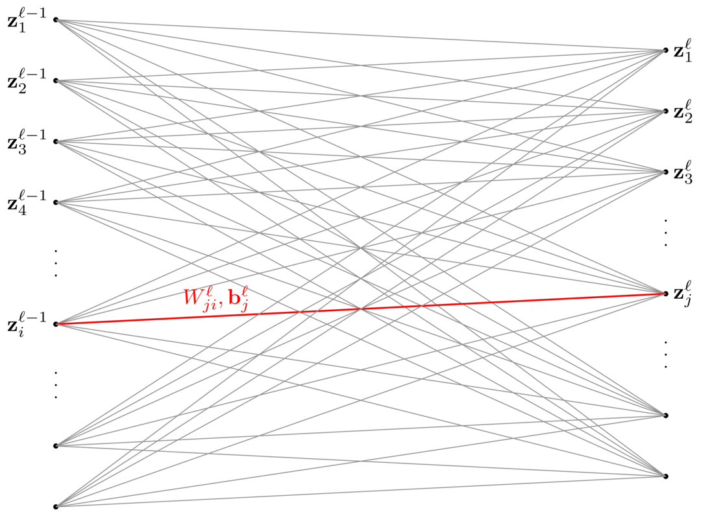
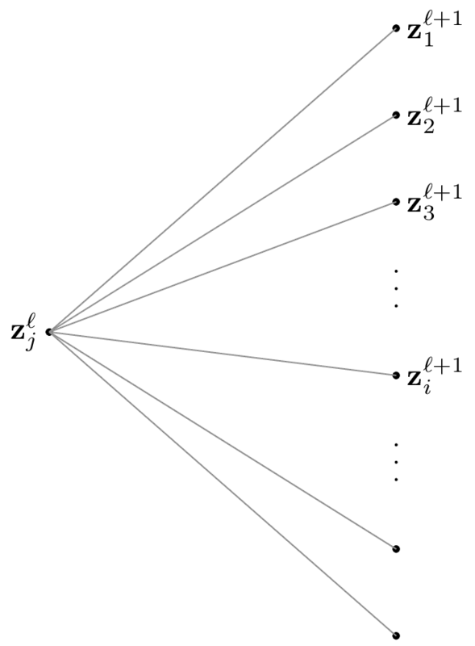

This article will explain how a basic, fully connected, feed forward neural network works. In particular, we'll be looking at how to build a classifier using a neural network.
The first thing we need to do is define the relevant terms and how they relate.
Let's say our data is $d$-dimensional and we have $k$ classes. Then a classifier is a function $f\colon\mathbb{R}^d\to\mathbb{R}^k$, i.e., a function that maps a point of data to a $k$-dimensional vector, which we'll use to directly classify that point.
There exists a classifier that classifies just about every point correctly. However, it's almost always impossible to find it explicitly because the objects we want to classify are usually very complicated and high-dimensional, e.g., we may want to distinguish pictures of dogs from pictures of planes, where the number of dimensions is the number of pixels (pictures nowadays can have millions of pixels!). This is where neural networks come in.
A neural network is used to approximate functions, and it turns out that we can approximate most functions very well using neural networks (under mild assumptions, we can approximate most functions arbitrarily well). When using a neural network for classification, what we're really doing is approximating the classifier mentioned above, so when we train the network, it "learns" the classifier function.
One of the most simple neural network architectures is as the function $\varphi\colon\mathbb{R}^d\to\mathbb{R}^k$, \[ \varphi(\mathbf{x}) = \varphi_r(\varphi_{r-1}(\varphi_{r-2}(\cdots\varphi_2(\varphi_1(\mathbf{x}))\cdots))). \]
Each $\varphi_\ell$ is called the $\ell$-th layer of our neural network (so the neural network has $r$ layers) and has the form
\[ \varphi_\ell(\mathbf{z}) = W^\ell\sigma{(\mathbf{z})} + \mathbf{b}^\ell, \]where $\sigma\colon\mathbb{R}\to\mathbb{R}$ is the activation function, applied to each component separately, $W^\ell$ is some matrix containing weights, and $\mathbf{b}^\ell$ is a vector called the bias.
To see what "applied to each component separately" means, look at the following formula:
\[ \sigma{(\mathbf{x})} = \begin{pmatrix}\sigma{(\mathbf{x}_1)} & \sigma{(\mathbf{x}_2)} & \sigma{(\mathbf{x}_3)} & \cdots\ \end{pmatrix}^\top. \]This may look intimidating, but it's only the notation that's scary when it comes to neural networks. In reality, the model is very simple. Each layer does the following things:
and that's it! Compose all of these functions together (i.e., apply them one after another) and you now have a neural network.
The next step is to figure out how to train a neural network so that it approximates the classifier better and better. To do so, like any other machine learning problem, we have to find an optimization problem to solve.
First, we would like to be able to have a probabilistic interpretation of our neural network (you'll see why in a bit). To do that, we first need to normalize the output of our neural network so that each component of the output vector is a probability, i.e., a number between $0$ and $1$, so that we can use maximum likelihood estimates to train our network. There are a number of ways to do this, but the most popular way to do it is to add a softmax layer to our neural network.
The softmax function, $s$, is given as follows: If we have a vector $\mathbf{z}$, then
\[ s(\mathbf{z})_j = \frac{e^{\mathbf{z}_j}}{\displaystyle\sum_i e^{\mathbf{z}_i}}, \]where the sum is over the components of $\mathbf{z}$. In other words, the $j$-th component of the result vector $s(\mathbf{z})$ is given by the formula above. You can easily verify that each component of $s(\mathbf{z})$ is positive, and that adding together all of its components of gives you $1$, which allows us to interpret $s(\mathbf{z})_j$ as the probability that $\mathbf{z}$ is in class $j$.
From now on, whenever we say our neural network has $r$ layers, it will actually have $r+1$ layers, with the last layer being the softmax layer. However, training will only be done on the first $r$ layers.
Let's say we have some training data $D = \{\mathbf{x}_1, \ldots, \mathbf{x}_N\} \subseteq \mathbb{R}^d$ (i.e., $N$ pieces of data, all of which are $d$-dimensional), $k$ classes given by $C_1$, $C_2$, $\ldots$, and $C_k$, and an $r$-layer neural network
\[ \varphi(\mathbf{x}) = s(\varphi_r(\varphi_{r-1}(\varphi_{r-2}(\cdots\varphi_2(\varphi_1(\mathbf{x}))\cdots)))). \]We want to train our parameters $W$ (which contains the weights and bias for every layer) to maximize the probability that our training data is classified correctly.
To figure that out, we need to first figure out the probability that one point is classified correctly. Let's say that $\mathbf{x}_n \in C_j$, i.e., the piece of data $\mathbf{x}_n$ is in class $j$.
To make writing things a bit easier, we'll introduce the following function:
\[ t_{nj} = \begin{cases} 1 & \text{if } x_n \text{ is in class } j \\ 0 & \text{otherwise}. \end{cases} \]To put it simply, $t_{nj}$ keeps track of what class each data point is in.
The probability that $\mathbf{x}_n$ is classified correctly given our weights $W$ is then
\[ P(\mathbf{x}_n \in C_j \mid W) = \varphi(\mathbf{x})_j \overset{\text{def}}{=} y_{nj}. \]However, a more convenient way to write it (as you'll see later) is
\[ P(\mathbf{x}_n \in C_j \mid W) = \prod_{i=1}^k P(\mathbf{x}_n \in C_i \mid W)^{t_{ni}} = \prod_{i=1}^k y_{ni}^{t_{ni}}. \]This is true since we will end up multiplying $P(\mathbf{x}_n \in C_j)$ by a bunch of $1$'s.
Each data point is also classified independently of the one before it, so the probability that the entire data set is classified correctly is just the product of every probability, which is given by
\[ P(D \mid W) = \prod_{n=1}^N \prod_{i=1}^k y_{ni}^{t_{ni}}. \]This is the quantity that we want to maximize. Since $\log(\cdot)$ is strictly increasing, maximizing $P(D \mid W)$ is the same as maximizing $\log{P(D \mid W)}$, which is the same as minimizing $-\log{P(D \mid W)}$. Thus, our optimization problem is equivalent to
\begin{align*} &\min_W -\log{P(D \mid W)} \\ ={}&\min_W -\sum_{n=1}^N \sum_{i=1}^k t_{ni}\log{y_{ni}}. \end{align*}We'll define
\[ E_n(W) = \sum_{i=1}^k t_{ni}\log{y_{ni}} \]so that we can write our objective function (also called the energy function) as
\[ E(w) = -\sum_{n=1}^N \left(\sum_{i=1}^k t_{ni}\log{y_{ni}}\right) = -\sum_{n=1}^N E_n(W). \]Now we can write our optimization problem as
\[ \min_W E(W). \]To minimize $E(W)$, we will use stochastic gradient descent (SGD) instead of our regular gradient descent. SGD is given by the following algorithm:
Repeat until "convergence":
Choose $n \in \{1, 2, \ldots, N\}$ randomly
$W_{\text{new}} = W_{\text{old}} - \eta\nabla E_n(W_{\text{old}})$
Every $N$ iterations of SGD is called an epoch and the step size $\eta$ is called the learning rate.
In other words, we perform gradient descent on the energy function associated with a randomly chosen training point until the algorithm "converges." We don't actual expect the process to ever converge, but after many epochs, we still expect the neural network to perform well.
The next section describes how (in gory detail) to derive the formulas needed to do gradient descent. If you're not interested in the calculations, you can just skip to the bottom and see the results.
The last thing we need to do is figure out how to calculate $\nabla E_n$, which means we need to calculate the partial derivatives
\[ \frac{\partial E_n}{\partial W^\ell_{ij}} \quad\text{and}\quad \frac{\partial E_n}{\partial \mathbf{b}^\ell_j} \]for every layer $\ell$ and every weight. Looking at the neural network
\[ \varphi(\mathbf{x}) = s(\varphi_r(\varphi_{r-1}(\varphi_{r-2}(\cdots\varphi_2(\varphi_1(\mathbf{x}))\cdots)))) \]again, we see that the naïve approach would be to use the chain rule $r+1$ times for each layer for every single weight for every iteration. This is impractical and would cause training to take so long that neural networks would be useless. Thankfully, however, we have something called backpropagation, which allows us to calculate the gradient relatively fast.
Backpropagation is actually just the (multivariable) chain rule. Before we start, let's introduce some notation and visualize the connections between layers $\ell-1$ and $\ell$.
Let $\mathbf{z}^0$ be the input vector. Then we'll define the following:
\begin{align*} \mathbf{a}^\ell &= \sigma{(\mathbf{z}^\ell)} \\ \mathbf{z}^{\ell+1} &= W^{\ell+1}\mathbf{a}^\ell + \mathbf{b}^{\ell+1}, \end{align*}where $\sigma$ is the activation function, as mentioned earlier.
For example, $\mathbf{z}^2$ is the output of the second layer, and $\mathbf{a}^2$ is the activation of that output after entering the third layer. In general, $\mathbf{z}^\ell$ is the output of the $\ell$-th layer before activation, and $\mathbf{a}^\ell$ is the activated input after entering the $\ell+1$-th layer.
On the left are the components of the vector $\mathbf{z}^{\ell-1}$ (each component is called a neuron), and on the right are the components of $\mathbf{z}^\ell$. Each neuron on the left is connected to the right via a weight and a bias for each component. There's an activation involved, but for simplicity, we'll keep it out of the diagram.
To see why $\mathbf{z}^{\ell-1}_i$ and $\mathbf{z}^\ell_j$ are connected by $W^\ell_{ji}$ and $\mathbf{b}^\ell_j$, we just need to think about matrix multiplication. The $j$-th component of $\mathbf{z}^\ell$ comes from a linear combination of the $j$-th row of $W^\ell$, which is why the first index is $j$. When we apply $W^\ell$ to $\sigma{(\mathbf{z}^{\ell-1})}$, only the $i$-th column of $W^\ell$ interacts with the vector, so the second index is $i$. Additionally, because of vector addition, only the $j$-th component of $\mathbf{b}^\ell$ contributes to the $j$-th component of $\mathbf{z}^\ell_j$, so the connection can be visualized by the above.
The only quantities that are associated with $W_{ji}^\ell$ and $\mathbf{b}^\ell_j$ are $\mathbf{z}^{\ell-1}_i$ and $\mathbf{z}^{\ell}_j$, so we can use the single variable chain rule to get
\[ \frac{\partial E_n}{\partial W^\ell_{ji}} = \frac{\partial E_n}{\partial \mathbf{z}^\ell_j} \frac{\partial \mathbf{z}^\ell_j}{\partial W^\ell_{ji}}. \]Similarly, taking the derivative with respect to $\mathbf{b}^\ell_j$, we get
\[ \frac{\partial \mathbf{z}^\ell_j}{\partial \mathbf{b}^\ell_j} = \frac{\partial E_n}{\partial \mathbf{z}^\ell_j} \frac{\partial \mathbf{z}^\ell_j}{\partial \mathbf{b}^\ell_j} \]The quantities are related by the following equation:
\[ \mathbf{z}^{\ell}_j = \sum_i W^{\ell}_{ji}\mathbf{a}^{\ell-1}_i + \mathbf{b}^{\ell}_j, \]so taking the derivative with respect to $W^{\ell}_{ji}$ and $\mathbf{b}^\ell_j$, we get
\[ \frac{\partial \mathbf{z}^\ell_j}{\partial W^\ell_{ji}} = \mathbf{a}^{\ell-1}_i \quad\text{and}\quad \frac{\partial \mathbf{z}^\ell_j}{\partial \mathbf{b}^\ell_j} = 1, \]respectively.
We'll also call $\dfrac{\partial E_n}{\partial \mathbf{z}^\ell_j} = \delta^\ell_j$, for convenience. Substituting, we get
\begin{align*} \frac{\partial E_n}{\partial W^\ell_{ji}} &= \frac{\partial E_n}{\partial \mathbf{z}^\ell_j} \frac{\partial \mathbf{z}^\ell_j}{\partial W^\ell_{ji}} = \delta_j^\ell \mathbf{a}^{\ell-1}_i \\ \frac{\partial E_n}{\partial \mathbf{b}^\ell_j} &= \frac{\partial E_n}{\partial \mathbf{z}^\ell_j} \frac{\partial \mathbf{z}^\ell_j}{\partial \mathbf{b}^\ell_j} = \delta_j^\ell. \end{align*}We have access to $\mathbf{a}^{\ell-1}_i$, so the next thing we need to do is be able to calculate $\delta^\ell_j = \dfrac{\partial E_n}{\partial \mathbf{z}^\ell_j}$. To do that, we look at how $\mathbf{z}^\ell_j$ affects the next layer.
We see that changing $\mathbf{z}^\ell_j$ changes every quantity in the next layer, which in turns changes $E_n(W)$, so by the chain rule,
\[ \frac{\partial E_n}{\partial \mathbf{z}^\ell_j} = \sum_i \frac{\partial E_n}{\partial \mathbf{z}^{\ell+1}_i}\frac{\partial \mathbf{z}^{\ell+1}_i}{\partial \mathbf{z}^\ell_j}. \]Since $\delta^\ell_j= \dfrac{\partial E_n}{\partial \mathbf{z}^\ell_j}$, we can write the above as
\[ \delta^\ell_j = \sum_i \delta^{\ell+1}_i\frac{\partial \mathbf{z}^{\ell+1}_i}{\partial \mathbf{z}^\ell_j}. \]Recall that $\mathbf{z}^{\ell+1}_i$ and $\mathbf{z}^{\ell}_j$ are related as follows:
\[ \mathbf{z}^{\ell+1}_i = \sum_j W^{\ell+1}_{ij}\sigma{(\mathbf{z}^{\ell}_j)} + \mathbf{b}^{\ell+1}_i. \]Taking the derivative with respect to $\mathbf{z}^\ell_j$ on both sides,
\[ \frac{\partial \mathbf{z}^{\ell+1}_i}{\partial \mathbf{z}^\ell_j} = W^{\ell+1}_{ij}\sigma'{(\mathbf{z}^\ell_j)} \]Thus,
\[ \delta^\ell_j = \sum_i \delta^{\ell+1}_iW^{\ell+1}_{ij}\sigma'{(\mathbf{z}^\ell_j)}. \]We now (almost) have a means of calculating $\nabla E_n(W)$ efficiently:
\begin{align*} \frac{\partial E_n}{\partial W^\ell_{ji}} &= \delta_j^\ell \mathbf{a}^{\ell-1}_i \\ \frac{\partial E_n}{\partial \mathbf{b}^\ell_j} &= \frac{\partial E_n}{\partial \mathbf{z}^\ell_j} \frac{\partial \mathbf{z}^\ell_j}{\partial \mathbf{b}^\ell_j} = \delta_j^\ell \\ \delta^\ell_j &= \sum_i \delta^{\ell+1}_iW^{\ell+1}_{ij}\sigma'{(\mathbf{z}^\ell_j)}. \end{align*}We have access to all the activated values $\mathbf{a}^{\ell-1}_i$ and the weights $W^\ell_{ji}$, and we can calculate $\delta_j^\ell$ if we know the values of $\delta$ for the next layer (this is why it's called backpropagation; the $\delta$'s "propagate" from the end to the beginning). So, if we can calculate $\delta_j^{r+1}$ (i.e., the $\delta$'s after the final layer), we can calculate the gradient and perform gradient descent.
Recall that
\begin{align*} E_n(W) &= \sum_{i=1}^k t_{ni}\log{y_{ni}} \\ y_{nj} &= s(\mathbf{z}^r)_j = \frac{e^{\mathbf{z}^r_j}}{\displaystyle\sum_i e^{\mathbf{z}^r_i}}. \end{align*}Then by the chain rule,
\[ \delta_j^{r+1} = \frac{\partial E_n}{\partial \mathbf{z}^\ell_j} = \sum_i \frac{\partial E_n}{\partial y_{ni}}\frac{\partial y_{ni}}{\partial \mathbf{z}^\ell_j}. \]The first term is easy to calculate:
\[ E_n(W) = \sum_{i=1}^k t_{ni}\log{y_{ni}} \implies \frac{\partial E_n}{\partial y_{nj}} = \frac{t_{nj}}{y_{nj}}. \]The second term is a little more difficult, and there are two cases.
If $i = j$:
\begin{align*} \frac{\partial y_{nj}}{\partial \mathbf{z}^{\ell}_j} &= \frac{\partial}{\partial \mathbf{z}^{\ell}_j}\frac{e^{\mathbf{z}^r_j}}{\displaystyle\sum_i e^{\mathbf{z}^r_i}} \\ &= \frac{e^{\mathbf{z}^r_j}}{\displaystyle\sum_i e^{\mathbf{z}^r_i}} - \frac{e^{\mathbf{z}^r_j}e^{\mathbf{z}^r_j}}{\left(\displaystyle\sum_i e^{\mathbf{z}^r_i}\right)^2} \\ &= y_{nj} - y_{nj}^2 \\ &= y_{nj}(1 - y_{nj}). \end{align*}If $i \neq j$:
\begin{align*} \frac{\partial y_{ni}}{\partial \mathbf{z}^{\ell}_j} &= \frac{\partial}{\partial \mathbf{z}^{\ell}_j}\frac{e^{\mathbf{z}^r_i}}{\displaystyle\sum_m e^{\mathbf{z}^r_m}} \\ &= -\frac{e^{\mathbf{z}^r_i}e^{\mathbf{z}^r_j}}{\left(\displaystyle\sum_m e^{\mathbf{z}^r_m}\right)^2} \\ &= -y_{ni}y_{nj} \\ &= y_{nj}(0 - y_{ni}). \end{align*}In general, we get that
\[ \frac{\partial y_{ni}}{\partial \mathbf{z}^{\ell}_j} = y_{nj}(I_{ij} - y_{ni}), \]where
\[ I_{ij} = \begin{cases} 1 & \text{if } i = j \\ 0 & \text{otherwise}. \end{cases} \]Substituting, we finally get
\[ \delta_j^{r+1} = \sum_i \frac{\partial E_n}{\partial y_{ni}}\frac{\partial y_{ni}}{\partial \mathbf{z}^\ell_j} = \sum_i \frac{t_{nj}}{y_{nj}}y_{nj}(I_{ij} - y_{ni}) = \sum_i t_{nj}(I_{ij} - y_{ni}). \]Thus, the algorithm for one iteration of SGD is
The math is pretty involved, but at the end of the day, backpropagation is just the chain rule, and the resulting algorithm is easy to implement.
After enough training, we can classify points by sending them through the neural net, and picking the component with the largest number. From a probability viewpoint, the neural network calculates the probability a point is in a particular class for each class, so we naturally pick the class with the largest probability for classification.
In summary, neural networks are used to approximate functions, and the approximations are improved (i.e., the neural network learns the classifier function) by maximizing the probability that our training data is classified correctly via stochastic gradient descent.
Neural networks aren't just limited to learning classifiers; they can learn how to generate images, play games, etc., but you'll find that coming up with those models is similar to what we've done here.